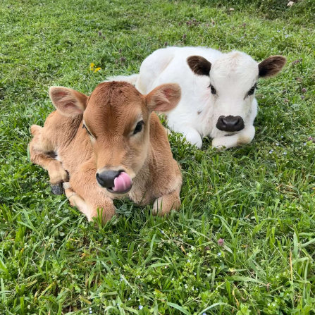
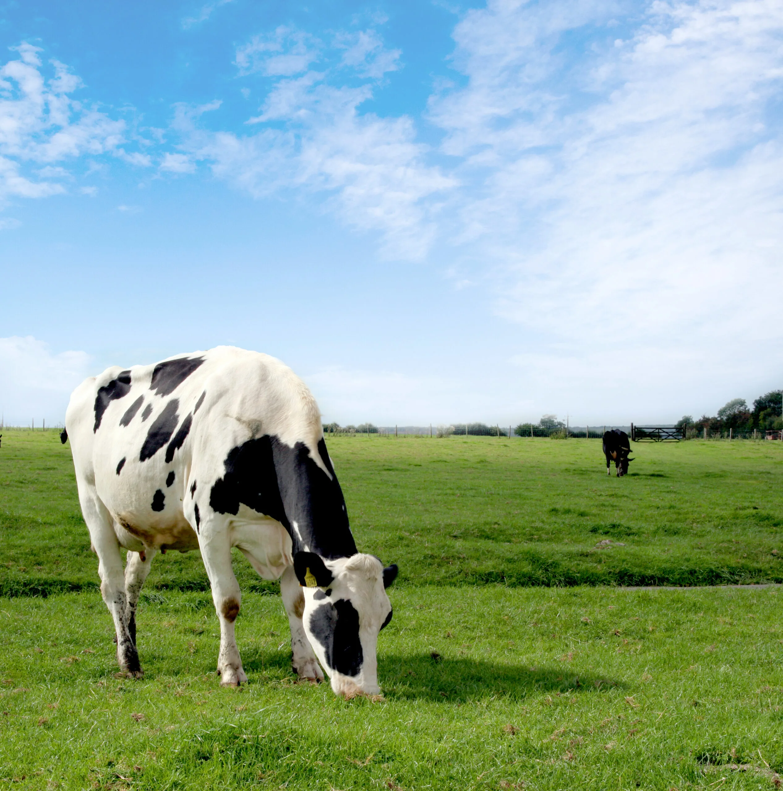
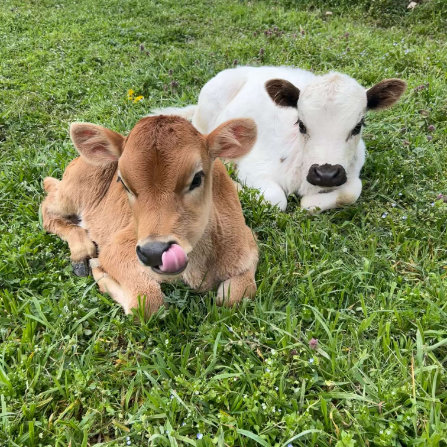
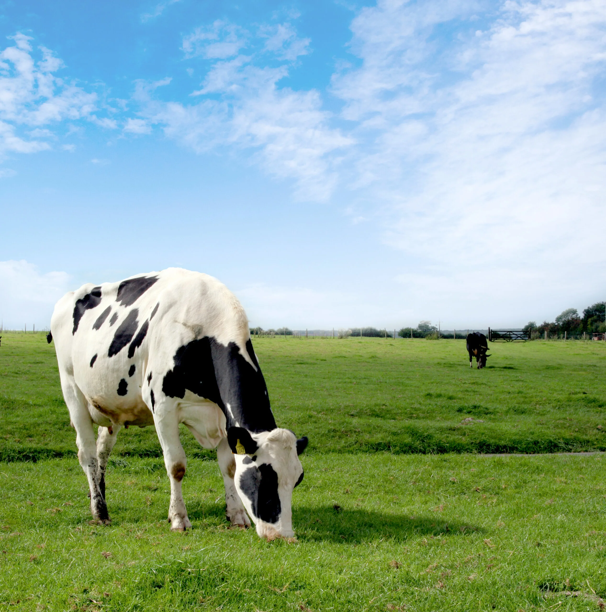

Author : PUGENGER Riad
Menu | Language
Cows are gentle, grazing animals found on farms and grasslands worldwide. They provide milk, meat, and leather, playing a key role in agriculture. With their slow, deliberate movements, they are a symbol of calm and patience. Cows form strong social bonds, often showing affection to herd members. Their iconic "moo" is a familiar sound, echoing across the countryside.
 


